Overview
The present version of the Unity Terrain Toolkit is based on :
The Unity Terrain Toolkit from the Unity Summer of Code 2009
All code by Sándor Moldán, except where noted.
Contains an implementation of Perlin noise by Daniel Greenheck.
Contains an implementation of the Diamond-Square algorithm by Jim George.
The present version of the Terrain Toolkit is an adaptation and enhancement of the original tool (V1.0.2) for the newer versions of Unity.
Beyond the necessary code adaptation, a cosmetic refactoring was performed (GUI mainly but also core code).
This being said, the whole toolkit works as the original toolkit was designed.
The original package (Unity 4 compatible) is bundled in the 'original' folder. It comes with its associated documentation.
The original toolkit was FREE, this version too !
Enjoy and keep it a popular tool !
Back to top
Content
The Terrain Toolkit 2017 package is composed of the following :
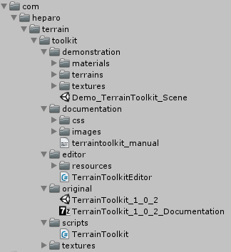
- com.heparo.terrain.toolkit : the Terrain Toolkit 2017 package (main folder hierarchy) [0 file(s)]
- demonstration : contains the demonstration scene [1 file(s)]
- materials : the materials used in the scene [n file(s)]
- terrains : the terrain used in the scene [1 terrain]
- textures : the textures used in the scene [n file(s)]
- documentation : contains the HTML documentation of the Terrain Toolkit 2017 package (normally the page you are presently reading... Isn't it ?) [1 file(s)]
- css : the CSS file of the documentation [1 file(s)]
- images : contains all the images used in the present documentation [n file(s)]
- editor : contains the cs extension used as the main working interface for the toolkit [1 file(s)]
- resources : contains all the resources used by the editor [n file(s)]
- original : contains the original toolkit (unitypackage from Unity 4) with its associated documentation [2 file(s)]
- scripts : contains all the Terrain Toolkit 2017 core classes [1 file(s)]
- textures : the terrain textures from Unity 4 to use with the toolkit [n file(s)]
Back to top
Getting started
1 - The demonstration scene
A demonstration scene is provided with the package. It's a simple an convenient way of testing the toolkit with a pregenerated terrain
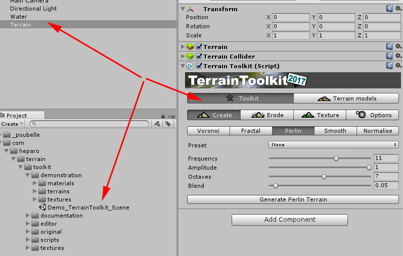
Select and open the demonstration scene provided with the asset. Then select the demonstration terrain to access to the the toolkit.
2 - From scratch
Getting started with Terrain Toolkit is quite easy : attach the Terrain Toolkit component to any Unity Terrain object either by dragging and dropping the script onto the terrain object or by selecting it through the Component/Scripts menu..
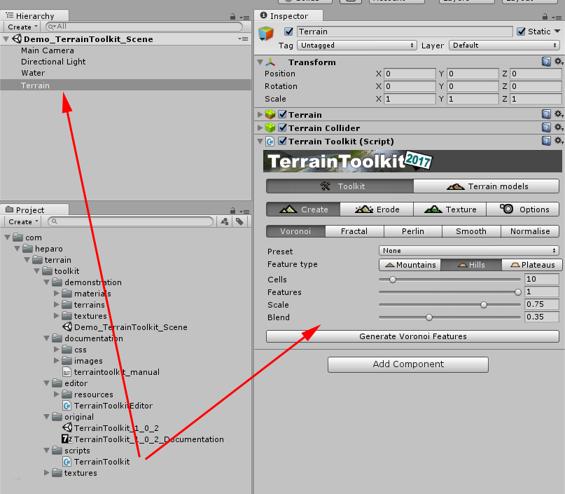
Attach the C# script [TerrainToolkit] to a terrain, you can now work with the toolkit
Back to top
Toolkit
The toolset is divided into three areas - terrain generation, erosion and texturing - accessible in the Create, Erode and Texture panels.
The toolkit contains:
- 6 different erosion filters (thermal, tidal, wind and 3 types of hydraulic erosion).
- 3 'generators' that use Voronoi, cloud fractal and Perlin noise algorithms to create base terrain.
- Some useful tools that allow the terrain object to be smoothed or normalised, inverted, etc.
- A procedural terrain texturing tool.
All of these features are provided both as filters which can be applied in the Unity Editor and as fully documented API methods which enables Unity artists and developers to procedurally generate, filters and texture terrain objects at runtime through their own scripts.
Additionally - thermal, fast-hydraulic and tidal erosion filters can also be applied directly to the terrain object using brushes in the Unity Editor.
1 - CREATE
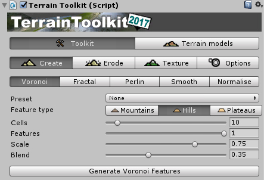
The Terrain Toolkit includes a number of generators for creating random terrains, plus some useful smoothing and normalising filters.
-
Voronoi : this tool generates a random heightmap consisting of a series of mountain-like peaks using a Voronoi diagram and applies it to the terrain object.
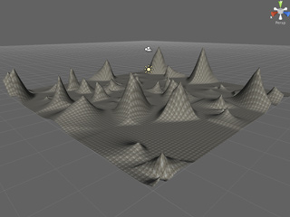
- A preset can be used to automatically set all of the properties for this generator.
- Feature type : the type of interpolation used, which influences the shape of the generated features. Mountains are interpolated linearly, Hills are interpolated along a sine curve and Plateaus are interpolated along a tangent curve.
- Cells [int] : the number of cells the terrain object will be divided into in the Voronoi diagram.
- Features [float] : the proportion of cells that will form rising features. The remaining cells are left flat. This is a floating point number in the range 0.0 - 1.0, where 0.0 results in no cells forming features and 1.0 results in all cells forming features.
- Scale [float] : the extent to which features are scaled down based on their proximity to the next nearest feature. This is a floating point number in the range 0.0 - 1.0, where 0.0 results in no scaling and 1.0 results in the maximum amount of scaling.
- Blend [float] : the resulting heightmap from this generator will be blended with the original heightmap by this amount. This is a floating point number in the range 0.0 - 1.0
-
Fractal : This tool generates a random heightmap using the 'cloud' or 'plasma' fractal algorithm and applies it to the terrain object.
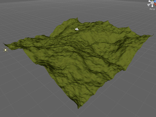
- A preset can be used to automatically set all of the properties for this generator.
- Delta [float] : this value affects the roughness of the generated terrain. This is a floating point number in the range 0.0 - 1.0, where a value of 0.0 results in a very smooth heightmap and a value of 1.0 results in an extremely noisy heightmap. Values close to 0.5 tend to work best.
- Blend [float] : the resulting heightmap from this generator will be blended with the original heightmap by this amount. This is a floating point number in the range 0.0 - 1.0
-
Perlin : this tool generates a random heightmap using Perlin noise and applies it to the terrain object.
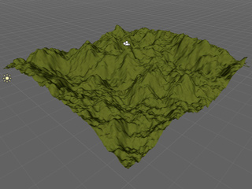
- A preset can be used to automatically set all of the properties for this generator.
- Frequency [int] : the initial frequency used to generate Perlin noise. This value is doubled in every successive Octave. Lower frequency values result in smooth, rolling hills and higher vales resut in more jagged terrain.
- Amplitude [float] : the initial amplitude used to generate Perlin noise. This value is halved in every successive Octave.
- Octaves [int] : the number of octaves used to generate Perlin noise. More octaves result in more detailed terrain but take longer to process.
- Blend [float] : the resulting heightmap from this generator will be blended with the original heightmap by this amount. This is a floating point number in the range 0.0 - 1.0
-
Smooth : this tool is a filter which applies smoothing to the terrain object repeatedly over a number of iterations.
- Iterations [int] : the number of times this filter is applied.
- Blend [float] : the resulting heightmap from this generator will be blended with the original heightmap by this amount. This is a floating point number in the range 0.0 - 1.0
-
Normalise : this tool is a filter which normalises the terrain object by setting the highest point in the current terrain heightmap to the maximum and the lowest point to the minimum. All other points are interpolated between the maximum and minimum.
- minHeight [float] : the lowest point is set to minHeight.
- maxHeight [float] : the greatest height is set to maxHeight
- Blend [float] : the resulting heightmap from this generator will be blended with the original heightmap by this amount. This is a floating point number in the range 0.0 - 1.0
2 - ERODE
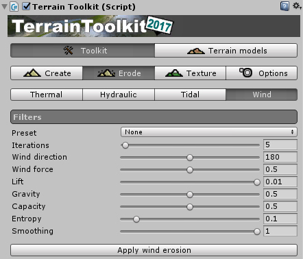
The Terrain Toolkit includes a number of forms of erosion which can either be applied to the entire terrain object either as a filter, or in some cases directly to an area of the terrain using brushes.
-
Brushes
- The following erosion types can be applied directly to the terrain object using brushes : Thermal Erosion, Hydraulic Erosion (Fast), Tidal Erosion
- Note : as brushes apply erosion in single iteration, other erosion types cannot be applied with brushes as they require multiple iterations to generate meaningful results.
- Hint : use the Thermal Erosion Brush and Hydraulic Erosion Brush presets for best results.
- To use a brush, select an appropriate erosion type and turn the brush on in the inspector. Brushes are applied by holding down the SHIFT key.
- Brushes have a number of settings which can be modified to alter the manner in which erosion is applied to the terrain object :
- Brush size [float] : the diameter of the brush in world units.
- Opacity [float] : the opacity of the brush at the centre. This is a floating point number in the range 0.0 - 1.0, where 0.0 means the brush has no effect, and 1.0 means the brush is applied at full effect.
- Softness [float] : the softness of the brush. This is a floating point number in the range 0.0 - 1.0, where 0.0 is a hard brush and 1.0 is a soft brush.
-
Thermal Erosion
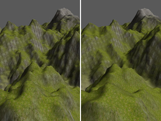
- Approach : single layer fast erosion (height only).
- Difference maps : yes, optional in brush mode
- Thermal erosion removes material from areas with a slope greater than the minimum slope and deposits it further down the slope. This tends to smooth and flatten inclines in the terrain.
- Hint : a preset can be used to automatically set all of the properties for this filter.
- Iterations [int] : the number of times this filter is applied. Not applicable to brushes.
- Minimum slope [float] : only points where the slope is greater than this amount are effected by erosion. Expressed in degrees in the range from 0.0 to 90.0
- Falloff [float] : the effects of erosion are blended out towards zero over this range. Expressed in a range from 0.0 (no falloff) to 1.0 (maximum falloff).
-
Hydraulic Erosion (Fast)
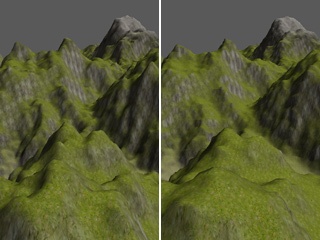
- Approach : single layer fast erosion (height only).
- Difference maps : yes, optional in brush mode
- Hydraulic erosion removes material from areas with a slope less than the maximum slope and deposits it further down the slope. This tends to steepen inclines in the terrain and further smooth and flatten other areas.
- Hint : a preset can be used to automatically set all of the properties for this filter.
- Iterations [int] : the number of times this filter is applied. Not applicable to brushes.
- Maximum slope [float] : only points where the slope is less than this amount are effected by erosion. Expressed in degrees in the range from 0.0 to 90.0
- Falloff [float] : the effects of erosion are blended out towards zero over this range. Expressed in a range from 0.0 (no falloff) to 1.0 (maximum falloff).
-
Hydraulic Erosion (Full)
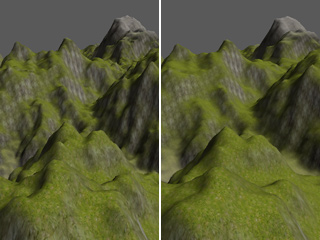
- Approach : 3 layer erosion (height, water, sediment)
- Difference maps : yes
- Full hydraulic erosion is a simplified simulation the water cycle, where material is sissolved by rainfall. Water carrying the dissolved material is moved over the terrain based on the slope, then deposited as the water is evaporated again.
- Hint : a preset can be used to automatically set all of the properties for this filter.
- Hint : water flows poorly over very noisy terrain. Try using Thermal Erosion first to smooth the terrain before applying this filter.
- Iterations [int] : the number of times this filter is applied. Not applicable to brushes.
- Rainfall [float] : the amount of water added to the system as precipitation per iteration. This value should generally be kept very low.
- Evaporation [float] : the amount of water removed from the system per iteration. When water is evaporated, it leaves behind sedimentary deposits if the the amount of remaining water after evaporation is insufficient to contain the amount of sediment at that point.
- Solubility [float] : the ratio of material that is dissolved by water, proportional to the amount of water at that point.
- Saturation [float] : the maximum ratio of dissolved material that can be suspended in water, proportional to the amount of water at that point.
-
Hydraulic Erosion (Velocity)
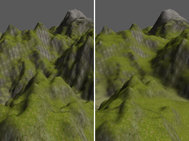
- Approach : 4 layer erosion (height, water, velocity, sediment)
- Difference maps : yes
- Velocity hydraulic erosion is similar to full hydraulic erosion, except that the movement of water in the system is used to generate a velocity map. Velocity increases water flow influenced by both slope and momentum, carrying dissolved material with it. The velocity map can also be used to simulated the effects of downcutting - creating a carved and weathered terrain.
- Hint : a preset can be used to automatically set all of the properties for this filter.
- Hint : water flows poorly over very noisy terrain. Try using Thermal Erosion first to smooth the terrain before applying this filter.
- Iterations [int] : the number of times this filter is applied. Not applicable to brushes.
- Rainfall [float] : the amount of water added to the system as precipitation per iteration. This value should generally be kept very low.
- Evaporation [float] : the amount of water removed from the system per iteration. When water is evaporated, it leaves behind sedimentary deposits if the the amount of remaining water after evaporation is insufficient to contain the amount of sediment at that point.
- Solubility [float] : the ratio of material that is dissolved by water, proportional to the amount of water at that point.
- Saturation [float] : the maximum ratio of dissolved material that can be suspended in water, proportional to the amount of water at that point.
- Velocity [float] : a global multiplier for the velocity of the water flow in the system. Could also be considered to be a gravity variable.
- Momentum [float] : the amount of velocity transferred into neighbouring cells by moving water.
- Entropy [float] : the amount of velocity removed from the system due to loss of kinetic energy such as friction, heat, etc.
- Downcutting [float] : the amount of additional material removed per iteration due to weathering in areas where water is flowing with a high velocity.
-
Tidal Erosion

- Approach : single layer fast erosion (height only)
- Difference maps : no
- Tidal erosion applies smoothing at the chosen sea level, except in areas where the slope exceeds a given value. This simulates the erosive action of waves around a shoreline and creates beaches.
- Note : when the tidal erosion panel is selected, a gizmo box will appear in the scene window showing both the current Sea level (blue) and Tidal range (white).
- Hint : a preset can be used to automatically set all of the properties for this filter.
- Note : presets for this filter will not affect the value of Sea level.
- Iterations [int] : the number of times this filter is applied. Not applicable to brushes.
- Sea level [float] : the altitude of the sea level. This is the point at which the greatest tidal erosion will occur. Expressed as a value of world units on the y-axis.
- Tidal range [float] : the range above and below the sea level which is affected by tidal erosion. The effects of erosion are blended out towards zero over this range in both directions. Expressed as a value of world units on the y-axis.
- Cliff limit [float] : only points where the slope is less than this amount are effected by tidal erosion. This maintains the appearance of cliffs adjacent to bodies of water.
-
Wind Erosion
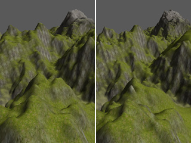
- Approach : 3 layer erosion (height, velocity, suspended material)
- Difference maps : yes
- Wind erosion is an experimental erosion filter. Material will be lifted from areas exposed to the wind, carried in the wind direction and deposited when the effects of gravity and entropy make it impossible for the particles to maintain lift. Smoothing can also be applied to areas exposed to the wind.
- Hint : a preset can be used to automatically set all of the properties for this filter.
- Iterations [int] : the number of times this filter is applied.
- Direction [float] : the direction of the wind in degrees. This is a floating point number in the range 0.0 - 360.0
- Force [float] : the strength of the wind.
- Lift [float] : the amount of material removed by wind in each iteration proportional to the velocity of the wind at that point.
- Gravity [float] : the proportion of suspended material that is dropped per iteration due to the effects of gravity.
- Capacity [float] : the maximum amount of material that can be suspended at any point.
- Entropy [float] : the amount of velocity removed from the system due to loss of kinetic energy such as friction, heat, etc.
- Smoothing [float] : the degree to which areas facing the wind direction are smoothed due to the effects of wind erosion and particulate abrasion.
3 - TEXTURE
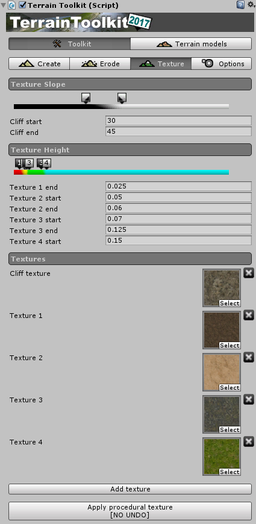
The Terrain Toolkit includes a procedural terrain texturing tool which automatically textures the terrain object using the slope and altitude of the terrain to determine which texture will be used.
The tool uses 'stops' to define the slope or altitude where each texture starts and ends - similar to the way gradients are edited in some graphics software. Textures are automatically blended between stops.
Stops can either be set numerically, or by dragging the stop handles in the interface.
-
Setting slope stops
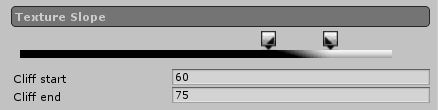
All values for slope stops are in degrees and must be in the range 0 - 90 degrees.
The example to the rights shows the cliff texture being applied at minimum where the slope is 20 degrees and at maximum where the slope is 50 degrees. Areas where the slope is less than 20 degrees will have no cliff texture, areas where the slope is greater than 50 degrees will have only the cliff texture.
- Slope start [float] : the slope at which Cliff texture will start to appear.
- Slope end [float] : the slope at which Cliff texture will appear fully.
- Cliff texture [Texture2D] : the texture used for steep areas. Suitable for rock and cliff textures.
-
Setting altitude stops
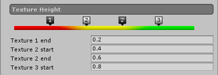
All values for altitude stops are defined as floating point numbers in the range 0.0 - 1.0, where 0.0 is the minimum height of the terrain object and 1.0 is the maximum height.
The example above shows three height textures distributed over the height range of the terrain.
-
For the first texture :
- Texture 1 end [float]
- The point at which first texture begins to blend into the next texture. Also, this texture appears fully between 0.0 and this point.
- Hint : Use textures suitable for low altitudes, such as sand, gravel, dirt or grass.
-
For intermediate textures :
- Texture 1 + n start [float]
- The point at which the previous texture stops blending into the next texture, and this texture appears fully.
- Texture 1 + n end [float]
- The point at which the current texture begins to blend into the next one.
- Hint : Use textures suitable for medium altitudes, such as grass or dirt.
-
For the last texture :
- Texture N start [float]
- The point at which the second last stops blending into the last texture, and the last texture appears fully. Also, this texture appears fully between this point and 1.0
- Hint : Use textures suitable for high altitudes, such as rock or snow.
-
For the first texture :
-
Apply procedural texture
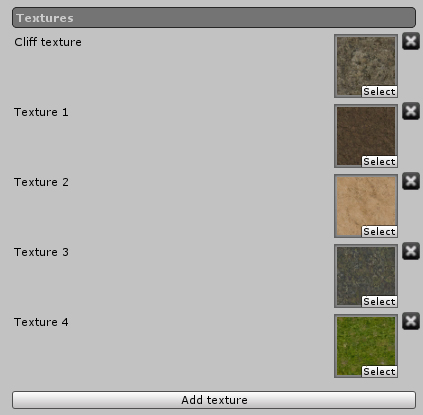
The textures used by the procedural terrain texturing tool can be added, deleted or changed both using the interface provided in the Texture panel, or as normally done in the Terrain component in the Terrain/Paint Texture panel.
Click the 'Add Texture' button to add more textures (maximum of six). To assign a texture, drag a texture image from the 'Project' folder onto one of the texture icons. To delete a texture, click the delete ('x') button next to it.
The procedural terrain texturing tool supports a total of six textures - one 'cliff' texture which is applied to steep areas, and five further textures which are applied to terrain at different heights.
-
Apply procedural texture
Once the slope and altitude stops have been set to the desired values, simply click the "Apply procedural texture" button.
Carefull, there is no undo for this operation !
4 - OPTIONS / ADVANCED SETTINGS
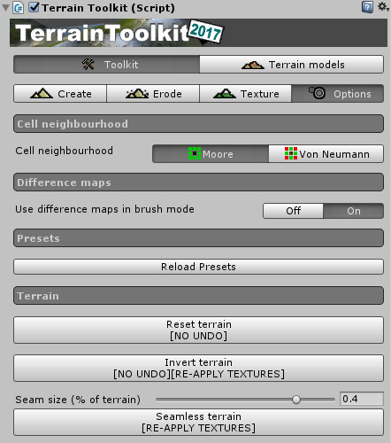
These settings are accessible with the last tab of the Terrain Toolkit tools inspector. They are recommended for advanced users.
-
Cell neighbourhood
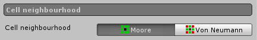
This setting switches between using Moore neighbourhoods (8 nearest neighbours) and Von Neumann neighbourhoods (4 nearest neighbours) for all erosion brushes and filters and procedural terrain texturing. Moore neighbourhoods produce the best results with the greatest accuracy but take longer to calculate, Von Neumann neighbourhoods provide faster results at the cost of lower quality.
-
Use difference maps in brush mode
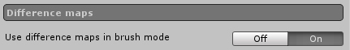
All filters and brushes use difference maps by default. Difference maps are used to calculate operations for each iteration at every cell (point) on the terrain object in parallel and then used apply the changes at the end of the iteration. These additional calculations mean the operations take longer, however if changes to cells are not performed in parallel, strange results can occur. This setting allows difference maps to be switched off in brush mode to provide faster performance.
-
Reload presets
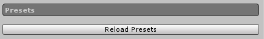
This button reloads all of the presets for the Terrain Toolkit. It is included for debug reasons only and generally will not be required for normal use of the Terrain Toolkit.
-
Terrain : reset terrain

- Reset the terrain : heightmap and textures are reseted. Carefull, there is no undo for this operation !
- Invert the terrain : invert the heightmap data of the terrain. Carefull, there is no undo for this operation and the textures surely need to be re-applied !
- Turn a terrain seamless : select the amount of terrain ti use for the seam and turn the terrain semaless ! The textures surely need to be re-applied !
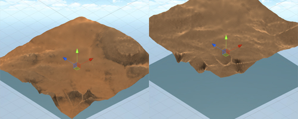
A terrain inverted with textures re-applied on the right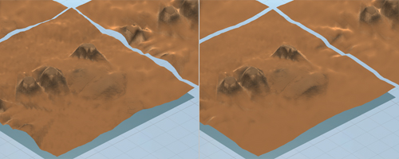
A terrain turned seamless with textures re-applied on the right
Back to top
Terrain models
The terrain models are a set of preconfigured generators and textures : a fast way to obtain a basic prototype !
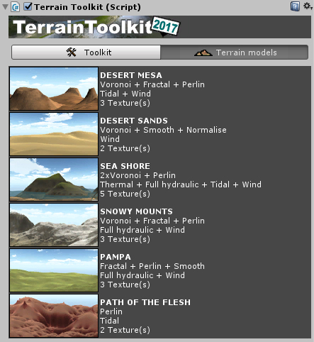
- You can edit and modify the terrain afterwards : all the tools are configured with the values used
- You don't like the result of the generation ? Try again ! Each generation is different from the previous !
- Note : the base terrain used for all the models of this asset is 1000 x 1000 x 600
- Note : a water plane is provided, feel free to disable it and move it when needed !
API Reference
In this section are described all the suitable classes for a normal and happy integration of RsDb in a project.
| namespace com.heparo.terrain.toolkit | |||||||||||||||||
| public class TerrainToolkit : MonoBehaviour | |||||||||||||||||
| TerrainToolkit contains a number of methods that can be used to generate, erode and texture Terrain objects in the Unity engine. | |||||||||||||||||
|
Back to top
Known bugs or malfunctions
None at the moment.
Back to top
Changelog
Version 20190125140200
- Big update for version 2018.3 + bug correction for versions 2017.x and 5.x
- For versions 2017.x and 5.x
- From a user reviews : thermal erosion modification to avoid generate artifacts
- For versions 2018.x prior to 2018.3.x
- Please use 2017.x version
- For version 2018.3.x and we will see in later versions what we will have to deal with...
- From a user reviews : thermal erosion modification to avoid generate artifacts
- API update : SplatPrototype is now deprecated and replaced by TerrainLayer with consequences
- In [TerrainToolkit.cs] variable [public SplatPrototype[] splatPrototypes;] is replaced by [public TerrainLayer[] terrainLayers;}
- In [TerrainToolkit.cs] method [public void addSplatPrototype(Texture2D tex, int index)] is replaced by [public void addTerrainLayer(Texture2D tex, int index)}
- In [TerrainToolkit.cs] method [public void addSplatPrototype(Texture2D tex, int index)] is replaced by [public void addTerrainLayer(Texture2D tex, int index)}
- In [TerrainToolkit.cs] method [public void deleteAllSplatPrototypes()] is replaced by [public void deleteAllTerrainLayers()}
- In [TerrainToolkit.cs] method [public void BuildPaths()] is added
- REASON We now must create and manage TerrainLayer assets thus the folder [TerrainToolkitLayers] is created automatically in [Assets] folder
- The toolkit will generate a sub-folder FOR EACH manipulated terrain using its name + "_Layers" (if the name of the terrain is modified, a new folder is generated)
- In each terrain folder, the TerrainLayer assets are generated according to your texturing actions
- Do not rename the TerrainLayers because the toolkit relies their names
- Compatible with Unity 5, 2017, 2018 (but NOT COMPATIBLE with HRP and LRP)
Version 20180515170000
- Simple actualized version - No modification
- Compatible with Unity 5, 2017, 2018 (but NOT COMPATIBLE with HRP and LRP)
Version 20180209120000
- Enhancement of the textureTerrain method :
- From the origins, the texturing algorithm would generate visual artefacts particulary visible in deferred rendering mode (white fringes) as stated by a user
- This is now corrected without modifying the orignal way
- Modified demonstration scene (2 cameras with deferred and forward rendering modes)
Version 20171108120000
- Minor code tweaking and cosmetics (explicit button labels when not undoable for example)
- Modification : advanced settings are now in a dedicated tab
- Added functions in advanced settings : reset, inverse and seamless terrain
- Added models for terrain : a quick way to generate ready to use terrains for prototyping (desert mesa, sea shore, etc.)
- Complete new documenation (for part reusing the original documentation)
- Modified demonstration scene
Version 20170315210000
- Initial released version
Back to top
Contacts
Also, for any issue / problem / bug / question relative to this asset, please feel free to send me an email at : contact@heparo.com
Please, do not forget to place [Terrain Toolkit 2017] at the beginning of your mail subject.
- I speak english
- Hablo español
- Je parle français
Thank you for downloading and using this asset !
Kind regards,
HEPARO / Hervé PARONNAUD (www.heparo.com)
Do you appreciate my work ? You can support me with
Back to top